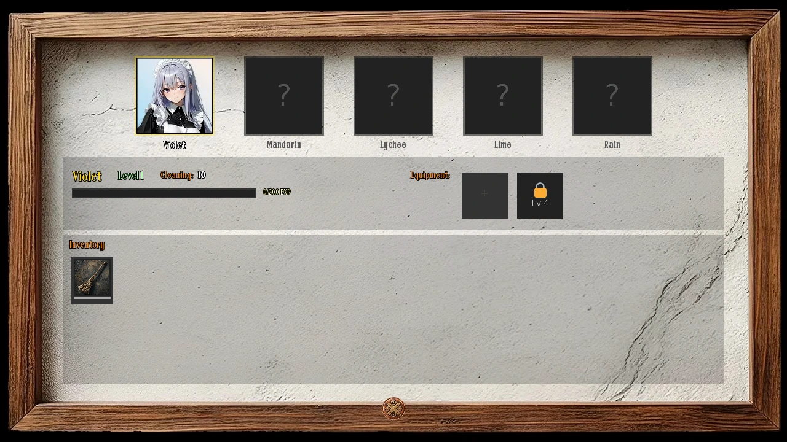
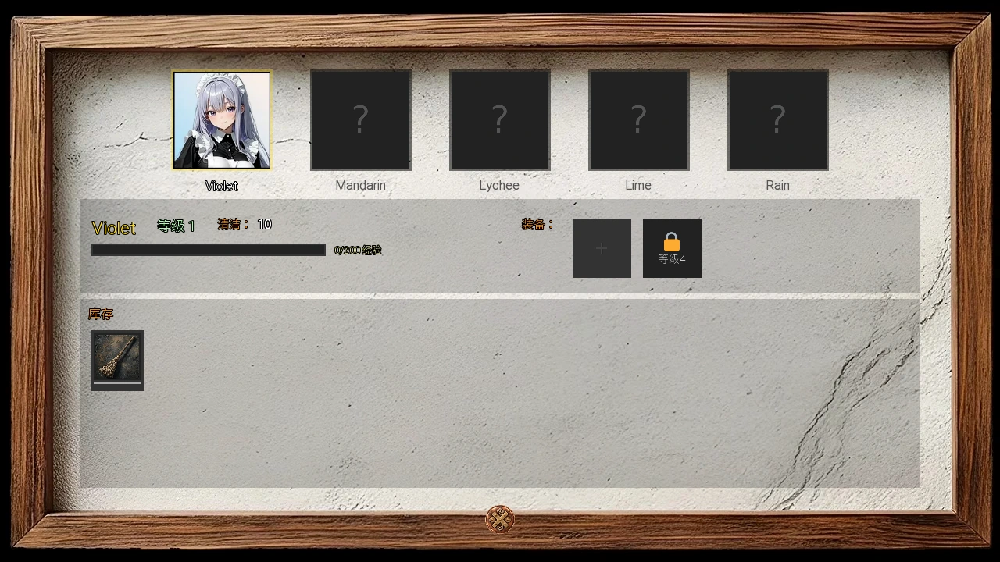

Select a screenshot to enlarge it. Screens show example inventories and progress.
A cleaning team with its own progression
The six maids keep Rose & Thorn clean and provide equipment bonuses. Their maid levels and equipment are separate from ordinary worker training, personal relationship stages and player levels. They do not take ordinary clients or receive a worker’s daily pay. Their room still contributes to business upkeep.
After acquiring a maid, open Maids Quarters → Manage Maids. The management screen takes 0 minutes. Select a maid to see her level, EXP, cleaning and equipment slots. Every acquired maid contributes to daily cleaning; you do not need to visit during her personal conversation shift or manually send her to work.
The named maids are Violet, Mandarin, Lychee, Lime, Rain and Onyx. Each has her own recruitment route and visiting schedule.
Recruit all six maids
| Maid | Conversation shift after recruitment | Acquisition |
|---|---|---|
| Violet | 06:00–10:00 | Bards Guild 50 Clout, then The Standing Ovation at the guild. |
| Mandarin | 10:00–14:00 | Own the business, encounter her in the dungeon, and defeat her Greater Demon opponent. |
| Lychee | 14:00–18:00 | Own the business, reach Crush (400 points) and use her invitation action (10 minutes, up to three attempts per day). Before recruitment she travels between locations; Caravan Rest Stop 07:00–08:00 is one reliable scheduled stop. |
| Lime | 18:00–22:00 | Pass Gandon’s Wizard Initiation with 17+points. Request requires Wizard Clout 50, Gandon Acquaintance and Blinky Known;60 minutes, once/day. |
| Rain | 22:00–02:00 | Own the business, search the Medieval Back Alleys and discuss research while you know Researching. Choose a research response, not leaving her alone. |
| Onyx | 02:00–06:00 | Recruit the first five, reach Close Friend with each, and finish Whispers of Six at Maids Quarters 08:00–20:00. Then complete her ordered dungeon encounters. |
The first five can be acquired in different orders. Onyx has the five-maid prerequisite. Normal travel, search, combat and relationship-action costs remain; there is no additional hiring payment in Manage Maids. A failed Wizard Initiation can be attempted on a later day. Passing with 25 points grants 3 Crystals, while 17–24 grants 1, subject to the one-time reward rules.
Rain does not require a separate train-completion milestone: own the business, learn Researching and choose a research response when you meet her. For each NPC’s full personal schedule, use her character guide.
Onyx’s ordered dungeon route
After Whispers of Six, find her first sighting in the ordinary random encounter pool on floors 46–50. Then follow these regions in order: 31–35 →41–45 →13 →36–40. Her final encounter in that sequence recruits her. A later region does not substitute for an unfinished earlier step.
The first sighting is randomly selected among other eligible scenes. Follow-ups have priority checks on eligible movement in their matching regions, so continue normal exploration rather than waiting for a town invitation. You may safely leave and return later; completed stages persist. These visits do not require all five earlier maids to reach maid level 6: their relationship requirement for Whispers of Six is Close Friend.
Onyx joins the same management system as the others: normal cleaning levels, EXP, slots and her own signature accessory.
Levels, EXP and the second equipment slot
| Level | Total EXP required | Base cleaning | Slots |
|---|---|---|---|
| 1 | 0 | 10 | 1 |
| 2 | 200 | 15 | 1 |
| 3 | 600 | 20 | 1 |
| 4 | 1,200 | 25 | 2 |
| 5 | 3,500 | 30 | 2 |
| 6 | 7,000 | 40 | 2 |
A newly acquired maid begins at level 1. Each levels independently. Level 4 opens a second equipment slot; level 6/MAX needs 7,000 total EXP. The thresholds are cumulative, not an extra 7,000 after level 5. Daily cleaning gives EXP even when cleanliness already ends at 100.
For a day with positive maid restoration, divide that restoration by the number of acquired maids, round down, and give each at least 1 base EXP. Then add the wearer’s EXP percentage and all-maid EXP percentages together before multiplying and rounding down. Worker innate cleaning does not increase the maid EXP pool. A room apprentice’s contribution does enter maid restoration.

Equip items and understand ownership limits
- Select the maid, then an owned item and an empty available slot. Levels 1–3 have one slot; levels 4–6 have two.
- Unequip an occupied slot before replacing its item. The same physical copy cannot be equipped to two maids at once; unequipping returns it to inventory.
- An accessory marked for one maid can only be worn by her. General items can be moved between acquired maids.
- Bonuses require equipment. An item sitting in inventory provides no cleaning, EXP or business bonus.
Current maid-item shop actions hide while you own that item, including an equipped copy. Moving it to another maid or unequipping it does not refresh the shop. Reward items have their own claim rules; do not plan on buying a copy for every maid just because the item is general-purpose. If you genuinely own multiple copies from different rewards, the equipment system handles them as individual copies.
Optional reference: all 32 equipment items
Show the complete current equipment catalog
| Item | Who can wear it | Effects while equipped | Source / limit |
|---|---|---|---|
| Sturdy Broom | Any maid | wearer cleaning +3 | General Goods Store — $300; 0 minutes; hidden while owned. |
| Enchanted Mop | Any maid | wearer cleaning +5; wearer cleaning +5% | Arcane Shop — $2,000; 0 minutes; hidden while owned. |
| Master Mop | Any maid | wearer cleaning +8; wearer cleaning +10% | Maid Mentor tutorial: raise any maid tolevel 3, then claim the reward. |
| Bonded Brush | Any maid | wearer cleaning +15% | Village Market — $1,200; 0 minutes; hidden while owned. |
| Personal Polish Cloth | Any maid | wearer cleaning +4 | General Goods Store — $350; 0 minutes; hidden while owned. |
| Dust Repellent Spray | Any maid | team cleaning, once +2 | Kupie’s Love Training: claim “Bella Maxed” achievement. |
| Dirt Trap Carpet | Any maid | daily mess reduction +5 | Bards Guild final quest: six different original songs and all four required performance venues. |
| Enchanted Sealant | Any maid | daily mess reduction +10% | Arcane Shop — $4,500; 0 minutes; hidden while owned. |
| Welcome Mat | Any maid | daily mess reduction +3 | Crafts and Jewelry Stall — $250; 0 minutes; hidden while owned. |
| Cleaning Manual Vol. 1 | Any maid | wearer EXP +10% | City Library (Uptown) — $400; 0 minutes; hidden while owned. |
| Cleaning Manual Vol. 2 | Any maid | wearer EXP +20% | Illuminated Manuscript Room — $2,000; 0 minutes; hidden while owned. |
| Mastery Guidebook | Any maid | wearer EXP +35% | Sylwithe's Hollow — 5 Crystals; 0 minutes; hidden while owned. |
| Training Journal | Any maid | wearer EXP +15% | Illuminated Manuscript Room — $500; 0 minutes; hidden while owned. |
| Mentorship Manual | Any maid | apprentice EXP +25 | Fighters Guild Vex the Shadow contract, dungeon floors 22–24; return and claim the reward. |
| Lucky Coin Pouch | Any maid | cleaning roll range, percentage points +15 | Fighters Guild Grimfang contract, dungeon floors 12–14; return and claim the reward. |
| Consistency Charm | Any maid | cleaning roll range, percentage points +25 | Crafts and Jewelry Stall — $4,000; 0 minutes; hidden while owned. |
| Perfection Pendant | Any maid | cleaning roll range, percentage points +35; wearer cleaning +10% | Kupie’s Love Training: claim “Emily Maxed” achievement. |
| Presentable Uniform | Any maid | business Reputation +3% | Tailor Shop — $1,200; 0 minutes; hidden while owned. |
| Scented Candles | Any maid | business Reputation +2% | Exotic Goods Merchant — $400; 0 minutes; hidden while owned. |
| Aromatic Incense | Any maid | business Reputation +5% | Exotic Goods Merchant — $1,800; 0 minutes; hidden while owned. |
| Advertising Flyers | Any maid | building-wide extra clients +1 | Village Market — $200; 0 minutes; hidden while owned. |
| Word of Mouth Network | Any maid | building-wide extra clients +2 | Crafts and Jewelry Stall — $1,500; 0 minutes; hidden while owned. |
| Noble Referral Letter | Any maid | building-wide extra clients +3; business gross income +5% | Vespa’s one-time Castle Garden action: Close Friend, business ownership,30 minutes and 3 Crystals. Receiving it also adds 1 stored Promotion. |
| Manager's Badge | Any maid | business gross income +5%; business Reputation +3% | Sylwithe's Hollow — 5 Crystals; 0 minutes; hidden while owned. |
| Violet's Stage Presence | Violet | wearer cleaning +25%; business Reputation +8%; wearer EXP +15% | Kupie’s Love Training: claim “Sonia Maxed” achievement. |
| Mandarin's Iron Will | Mandarin | wearer cleaning +15; daily mess reduction +8; wearer cleaning +10% | Kupie’s Love Training: claim “Elara Maxed” achievement. |
| Lychee's Frost Crystal | Lychee | wearer cleaning +30%; team cleaning, once +3; cleaning roll range, percentage points +20 | Kupie’s Love Training: claim “Honey Maxed” achievement. |
| Lime's Burning Passion | Lime | all maids EXP +20%; team cleaning +10%; wearer EXP +25% | Kupie’s Love Training: claim “Willow Maxed” achievement. |
| Rain's Analytical Lens | Rain | wearer cleaning +20%; daily mess reduction +15%; apprentice EXP +30 | Kupie’s Love Training: claim “Ghost Maxed” achievement. |
| Onyx's Mourning Veil | Onyx | wearer cleaning +25%; daily mess reduction +20%; business gross income +8% | Recruit Onyx and reach Friend with Chrysalia; visit Chrysalia’s Future location for The Mourning Veil gift. |
| Silken Moth Cloth | Any maid | wearer cleaning +10; daily mess reduction +10% | Combined caterpillar population 10,000,000: visit Medieval Whispering Woods and complete the associated blessing. One-time item reward. |
| Sea's Approval | Any maid | effective Decor +1; effective Promotion +1 | Shelly’s Gift Shop on Sirena Isle:60 Sea Shells, one-time purchase. |
“Team cleaning, once” is a flat addition to the combined team total, not that amount for every maid. Business income and Reputation effects apply to the building; apprentice EXP is for assigned worker apprentices. The Noble Referral Letter also gives its separate one-time Promotion increase when received, beyond its equipped effects.
How the daily cleaning roll works
Each maid starts from her level’s cleaning value. Add her personal percentage to that base, round down, then add her personal flat bonuses. Sum those maid values, apply the combined team percentage and round down, then add the team flat bonus once. After that, each assigned Maids Quarters apprentice adds 10 base cleaning.
The combined base then rolls 50–150%. Equipment’s cleaning-variance bonus shifts both ends upward: +25 means 75–175%, and +35 means 85–185%. It does not narrow the range. The result rounds down and becomes that day’s maid restoration.
Daily mess starts from the building’s client load, including extra Bar/VIP and monster mess where applicable. Equipped percentage mess reduction applies first and rounds down, then flat reduction applies, with a minimum of 0 mess. Net change is maid restoration plus worker innate cleaning minus that reduced mess; final cleanliness is clamped to 0–100.
Worked example
A level 4 maid has 25 base cleaning. With +10%personal cleaning and +8 flat, her value is floor(25×1.10)+8=35. With another level 4 maid at 25, the team total is 60. A team +10%and +2 flat makes floor(60×1.10)+2=68. One apprentice raises the base to 78. A +25 variance bonus makes the daily roll 75–175%, giving 58–136 restoration after rounding. EXP uses the restoration before the 0–100 cleanliness cap.
Why cleanliness matters to income and Reputation
For ordinary workers, the day’s starting cleanliness changes the minimum and maximum of the pay roll. It is not a flat cap that makes everyone earn nothing at 0 cleanliness. Later clothing, skill, equipment and business bonuses still follow the income rules. Reputation uses the cleanliness after that day’s cleaning.
| Cleanliness | Base pay minimum | Base pay maximum | Reputation multiplier |
|---|---|---|---|
| 0–4 | 0 | 100% | 0% |
| 5–14 | 25% | 100% | 25% |
| 15–29 | 50% | 100% | 50% |
| 30–44 | 75% | 100% | 75% |
| 45–59 | 100% | 100% | 100% |
| 60–74 | 100% | 120% | 120% |
| 75–89 | 100% | 140% | 140% |
| 90–100 | 100% | 160% | 160% |
A healthy cleaning margin supports Reputation immediately and the next day’s starting income range. Frequent business reports also settle maid EXP and level-ups for completed days. There is no need to let the property become dirty to train maids.
Maids Quarters and apprentices
Maids Quarters grows automatically with acquired maids; its effective level is acquired maid count plus assigned apprentices. You cannot buy normal room upgrades to replace missing maids. The room has up to three apprentice slots. Each apprentice adds 10 base cleaning and 1 effective room level, while leaving her ordinary working position.
Business upkeep includes $20 per effective Maids Quarters level per completed day, as part of the normal building expense. Thus a new maid or apprentice improves cleaning but also raises upkeep. The room’s appearance may stay the same as apprentices join; their cleaning and upkeep still apply.
In New Game+, maid recruitment, maid EXP and business operations restart. Maid equipment returns to inventory under the normal carryover rules. In an ordinary save/load, the acquired roster, EXP and equipment are saved.
Practical equipment choices and next steps
- Use affordable flat cleaning early. Compare Sturdy Broom and Personal Polish Cloth with your actual budget and available slot.
- Aim for level 4 to open the second slot, then combine cleaning with EXP or a business bonus as needed. EXP percentages add together; they are not separate compounded multipliers.
- Recruit more maids and compare their stronger combined cleaning against the extra room upkeep. Their visiting hours are for conversations, not a daily-cleaning attendance test.
- Use mess reduction when your clients and side rooms create a large load. A higher variance roll helps both cleaning and the EXP pool; a global flat bonus is still added only once.
- Collect desired tutorial, guild and Kupie achievement rewards. Reaching a condition without claiming its reward does not put the equipment in inventory.
Related guides: Brothel operations, Business calculations, Kupie’s Love Training, Lychee, Chrysalia, Fighters Guild and Bards Guild and Wizard faction.
拥有独立成长的清洁团队
六名女仆负责玫瑰与荆棘的清洁，并通过装备提供经营加成。女仆等级与装备独立于普通员工培训、个人关系阶段和玩家等级。她们不接普通客户，也不领取员工式的每日工资，但女仆宿舍仍会计入营业维护费。
取得女仆后，从女仆宿舍 → 管理女仆进入，管理画面耗时0分钟。选择女仆，可查看等级、经验、清洁与装备栏。所有已招募女仆都会参与每日清洁，不需要等到她本人的交谈时段，也不需要每天手动派工。
六名女仆分别是Violet、Mandarin、Lychee、Lime、Rain与Onyx。各自有独立的招募路线与交谈时段。
六名女仆的招募方式
| 女仆 | 招募后的交谈时段 | 取得方式 |
|---|---|---|
| Violet | 06:00–10:00 | 吟游诗人公会声望50后，回公会完成「起立喝彩」招募剧情。 |
| Mandarin | 10:00–14:00 | 拥有营业场所后，在地下城遇见她并击败对应的大恶魔对手。 |
| Lychee | 14:00–18:00 | 拥有营业场所并达到迷恋（400点）后，使用邀请动作（10分钟，每日最多三次）。招募前她会在各处活动，07:00–08:00的商队休息站是一个固定停留点。 |
| Lime | 18:00–22:00 | 通过Gandon的巫师入门仪式，得分至少17。申请需要巫师派系声望50、与Gandon达到熟人、与Blinky达到已知；耗时60分钟，每日一次。 |
| Rain | 22:00–02:00 | 拥有营业场所后，搜索中世纪后巷；掌握研究技能，并选择讨论研究的回应。 |
| Onyx | 02:00–06:00 | 先招募前五名，与各人达到亲密朋友，并在08:00–20:00到女仆宿舍完成「六之低语」，再推进她按顺序出现的地下城遭遇。 |
前五名可按不同顺序招募，Onyx则需要先取得其余五名。旅行、搜索、战斗与关系动作仍按本身规则消耗，管理女仆中没有额外的招聘付款。巫师入门仪式失败后，可等次日再试。得分25可获3颗水晶，17–24得1颗，仍受一次性奖励记录约束。
Rain不另要求先完成火车剧情；拥有营业场所、学会研究后，在邂逅中选择研究回应即可推进招募。各NPC的完整个人日程，请见对应人物指南。
Onyx的地下城顺序
完成六之低语后，先在第46–50层的一般特殊遭遇中寻找她的初见，再按顺序前往31–35 →41–45 →13 →36–40层。完成这条顺序中的最后一段后，她会加入。直接去较后的区域，不能替代尚未完成的前一步。
初见会在其他符合条件的场景中随机选择；后续则会在对应区域的正常移动中优先检查，继续探索即可，不必等待城镇邀请。可以先离开、之后再回来，已完成步骤会保留。「六之低语」要求的是前五名的亲密朋友关系，不是让她们全部达到女仆6级。
Onyx加入后，使用同一套女仆清洁、经验与装备规则，并有自己的专属饰品。
等级、经验与第二装备栏
| 等级 | 所需累计经验 | 基础清洁 | 装备栏 |
|---|---|---|---|
| 1 | 0 | 10 | 1 |
| 2 | 200 | 15 | 1 |
| 3 | 600 | 20 | 1 |
| 4 | 1,200 | 25 | 2 |
| 5 | 3,500 | 30 | 2 |
| 6 | 7,000 | 40 | 2 |
新取得的女仆从1级开始，各自独立成长。4级开放第二装备栏；6级／MAX需要累计7,000经验，不是5级之后再额外赚7,000。即使当日清洁度已经达到100，仍可按清洁量获得经验。
当日女仆清洁量大于零时，先除以已招募女仆人数，向下取整，并保证每人至少1点基础经验。再把个人经验百分比与全体女仆经验百分比相加，乘上基础值后向下取整。员工固有被动提供的清洁不进入女仆经验池；女仆宿舍学徒的清洁则会计入。

装备道具与持有数量限制
- 先选择女仆，再选择库存道具和一个已开放的空装备栏。1–3级一栏，4–6级两栏。
- 替换前先卸下原装备，卸下的道具会退回库存；同一件实物不能同时给两名女仆穿戴。
- 标有指定女仆的饰品只能由她使用，通用品可在已招募女仆之间移动。
- 道具需要装备才生效，放在库存里不会提供清洁、经验或经营加成。
当前女仆道具商店在你已持有同款时会隐藏购买动作，已装备的也算。换给另一名女仆或卸回库存，不会刷新商店。奖励物品另有领取规则，不能因为是通用品，就预期能为每名女仆各买一份。若确实通过不同奖励拥有多件，装备系统会按各件实物处理。
可选参考：全部32件装备
展开当前完整装备目录
| 道具 | 佩戴者 | 装备后的效果 | 来源与限制 |
|---|---|---|---|
| 结实扫帚 | 任意女仆 | 佩戴者清洁 +3 | 杂货店 — 300财富；0分钟；持有同款时隐藏。 |
| 附魔拖把 | 任意女仆 | 佩戴者清洁 +5；佩戴者清洁 +5% | 奥术商店 — 2,000财富；0分钟；持有同款时隐藏。 |
| 大师拖把 | 任意女仆 | 佩戴者清洁 +8；佩戴者清洁 +10% | 女仆导师教程：任一女仆达到3级后，到教程面板领取。 |
| 绑定刷子 | 任意女仆 | 佩戴者清洁 +15% | 村庄市场 — 1,200财富；0分钟；持有同款时隐藏。 |
| 个人擦亮布 | 任意女仆 | 佩戴者清洁 +4 | 杂货店 — 350财富；0分钟；持有同款时隐藏。 |
| 防尘喷雾 | 任意女仆 | 全队清洁合计一次 +2 | Kupie 的爱之训练：领取「Bella 满级」成就奖励。 |
| 集尘地毯 | 任意女仆 | 每日污秽减少 +5 | 吟游诗人公会最终任务：六首不同的原创曲，并在要求的四处场所演出。 |
| 附魔密封剂 | 任意女仆 | 每日污秽减少 +10% | 奥术商店 — 4,500财富；0分钟；持有同款时隐藏。 |
| 欢迎垫 | 任意女仆 | 每日污秽减少 +3 | 工艺品与珠宝摊 — 250财富；0分钟；持有同款时隐藏。 |
| 清洁手册第1卷 | 任意女仆 | 佩戴者经验 +10% | 城市图书馆（上城区） — 400财富；0分钟；持有同款时隐藏。 |
| 清洁手册第2卷 | 任意女仆 | 佩戴者经验 +20% | 彩饰手稿室 — 2,000财富；0分钟；持有同款时隐藏。 |
| 精通指南 | 任意女仆 | 佩戴者经验 +35% | Sylwithe的幽谷 — 5颗水晶；0分钟；持有同款时隐藏。 |
| 训练日志 | 任意女仆 | 佩戴者经验 +15% | 彩饰手稿室 — 500财富；0分钟；持有同款时隐藏。 |
| 导师手册 | 任意女仆 | 学徒经验 +25 | 完成战士公会Vex the Shadow委托，目标在地下城22–24层；回公会领取。 |
| 幸运钱币袋 | 任意女仆 | 清洁随机区间，百分点 +15 | 完成战士公会Grimfang委托，目标在地下城12–14层；回公会领取。 |
| 稳定护符 | 任意女仆 | 清洁随机区间，百分点 +25 | 工艺品与珠宝摊 — 4,000财富；0分钟；持有同款时隐藏。 |
| 完美吊坠 | 任意女仆 | 清洁随机区间，百分点 +35；佩戴者清洁 +10% | Kupie 的爱之训练：领取「Emily 满级」成就奖励。 |
| 体面制服 | 任意女仆 | 营业声誉 +3% | 裁缝店 — 1,200财富；0分钟；持有同款时隐藏。 |
| 香薰蜡烛 | 任意女仆 | 营业声誉 +2% | 异域商品商人 — 400财富；0分钟；持有同款时隐藏。 |
| 芳香熏香 | 任意女仆 | 营业声誉 +5% | 异域商品商人 — 1,800财富；0分钟；持有同款时隐藏。 |
| 广告传单 | 任意女仆 | 全店额外客户 +1 | 村庄市场 — 200财富；0分钟；持有同款时隐藏。 |
| 口碑网络 | 任意女仆 | 全店额外客户 +2 | 工艺品与珠宝摊 — 1,500财富；0分钟；持有同款时隐藏。 |
| 贵族推荐信 | 任意女仆 | 全店额外客户 +3；营业税前收入 +5% | Vespa在城堡花园的一次性动作：亲密朋友、拥有营业场所、30分钟与3颗水晶。领取时还会使储存宣传等级增加1。 |
| 经理徽章 | 任意女仆 | 营业税前收入 +5%；营业声誉 +3% | Sylwithe的幽谷 — 5颗水晶；0分钟；持有同款时隐藏。 |
| Violet的舞台气场 | Violet | 佩戴者清洁 +25%；营业声誉 +8%；佩戴者经验 +15% | Kupie 的爱之训练：领取「Sonia 满级」成就奖励。 |
| Mandarin的钢铁意志 | Mandarin | 佩戴者清洁 +15；每日污秽减少 +8；佩戴者清洁 +10% | Kupie 的爱之训练：领取「Elara 满级」成就奖励。 |
| Lychee的霜冻水晶 | Lychee | 佩戴者清洁 +30%；全队清洁合计一次 +3；清洁随机区间，百分点 +20 | Kupie 的爱之训练：领取「Honey 满级」成就奖励。 |
| Lime的燃烧热情 | Lime | 全体女仆经验 +20%；全队清洁 +10%；佩戴者经验 +25% | Kupie 的爱之训练：领取「Willow 满级」成就奖励。 |
| Rain的分析镜片 | Rain | 佩戴者清洁 +20%；每日污秽减少 +15%；学徒经验 +30 | Kupie 的爱之训练：领取「Ghost 满级」成就奖励。 |
| Onyx的哀悼面纱 | Onyx | 佩戴者清洁 +25%；每日污秽减少 +20%；营业税前收入 +8% | 先招募Onyx，并与Chrysalia达到朋友；前往Chrysalia在未来的所在地，触发哀悼面纱赠礼。 |
| 丝蛾布 | 任意女仆 | 佩戴者清洁 +10；每日污秽减少 +10% | 毛毛虫合计种群达到10,000,000后，前往中世纪低语森林完成相应祝福；一次性物品奖励。 |
| 海之认可 | 任意女仆 | 有效装饰等级 +1；有效宣传等级 +1 | 塞壬岛Shelly的礼品店，60海贝壳，一次性购买。 |
「全队清洁合计一次」是对全队总量加一次，不是每名女仆都再加同样数值。营业收入与声誉效果作用于全店；学徒经验则用于任职学徒的员工。贵族推荐信在领取时还会另行增加一次宣传等级，不包含在装备效果里。
每日清洁如何计算
每名女仆先取等级对应的基础清洁，乘上个人清洁百分比并向下取整，再加个人固定清洁。把各女仆的结果相加，应用全队百分比并向下取整，之后只加一次全队固定清洁。最后，每名女仆宿舍学徒再提供10点基础清洁。
合计基础量会抽取50–150%的随机倍率。「清洁随机区间」加成会把上下限一起提高：+25变成75–175%，+35变成85–185%，不会缩窄随机范围。乘完向下取整，得到当日女仆清洁量。
当日污秽来自全店客户负担，也包含适用的酒吧、VIP与怪物额外污秽。先应用装备的百分比减污并向下取整，再扣固定减污，最低为0。最后以女仆清洁量加员工固有清洁、减去实际污秽，得到净变化；最终清洁度限制在0–100。
计算示例
4级女仆基础清洁25，个人清洁+10%且固定清洁+8，得到向下取整的25×1.10，再加8，即35。若另有一名基础25的4级女仆，全队合计60。再加全队10%与固定2，得到向下取整的60×1.10，再加2，即68。一名学徒把基础量提高至78。随机区间加成25，使每日倍率为75–175%，取整后清洁量为58–136。经验计算采用这一清洁量，而不是清洁度面板最终增加了多少。
清洁度怎样影响收入与声誉
普通员工当日开始时的清洁度，会改变工资随机范围的下限与上限，不是把总收入直接乘一个固定上限。清洁度0也不代表所有员工都必定零收入，后续服装、技能、装备与经营加成仍按收入规则处理。声誉则使用当日清洁后的清洁度。
| 清洁度 | 基础工资下限 | 基础工资上限 | 声誉倍率 |
|---|---|---|---|
| 0–4 | 0 | 100% | 0% |
| 5–14 | 25% | 100% | 25% |
| 15–29 | 50% | 100% | 50% |
| 30–44 | 75% | 100% | 75% |
| 45–59 | 100% | 100% | 100% |
| 60–74 | 100% | 120% | 120% |
| 75–89 | 100% | 140% | 140% |
| 90–100 | 100% | 160% | 160% |
保持足够清洁余量，可以立即支持声誉，并改善下一天的起始收入范围。定期获取营业报告，也能结算已结束日期的女仆经验与升级。不需要故意让场所变脏，女仆才会成长。
女仆宿舍与学徒
女仆宿舍会随招募自动发展，有效等级等于已招募女仆人数加现任学徒人数，不能靠普通房间付费升级代替招募。宿舍最多有三个学徒名额。每名学徒提供10点基础清洁与1有效房间等级，同时会离开原本的普通营业岗位。
常规营业维护费中，女仆宿舍按每个有效等级、每个已结束日期20财富计费。因此新增女仆或学徒会加强清洁，也会增加维护费。宿舍画面不一定随每名学徒加入而变化，但其清洁与维护费仍会照常计算。
新游戏+会重新开始女仆招募、女仆经验与经营，装备则按保留规则退回库存。普通存档与读档会保存已招募名单、经验和装备。
实用装备安排与后续目标
- 早期先考虑负担得起的固定清洁，按预算与空装备栏比较结实扫帚和个人擦亮布。
- 优先争取4级第二栏，再按需要搭配经验或经营加成。经验百分比先相加，不是逐项叠乘。
- 增招女仆能提高团队清洁，也要计入宿舍维护费。她们的个人时段用于交谈，不是每日清洁的出勤检查。
- 客户与附属设施造成大量污秽时，减污会更实用。提高随机区间能同时支持清洁与经验池，但全队固定加成仍只加一次。
- 记得领取需要的教程、公会和Kupie成就奖励。只达到条件而未领奖，道具不会自动进入库存。
相关指南：青楼经营、经营数值与计算、Kupie 的爱之训练、Lychee、Chrysalia、战士公会与吟游诗人公会与巫师派系。
Adapted and updated from the community Chronoromancer Wiki. Community source and history · CC BY-SA 4.0. Game images © Chronoromancer Studio.